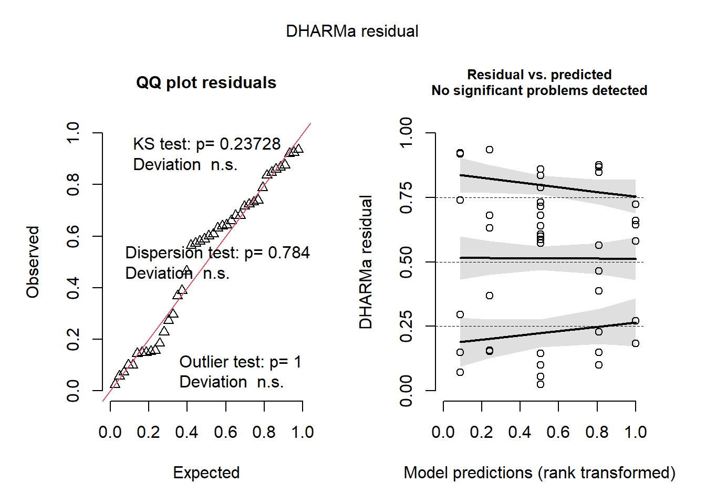
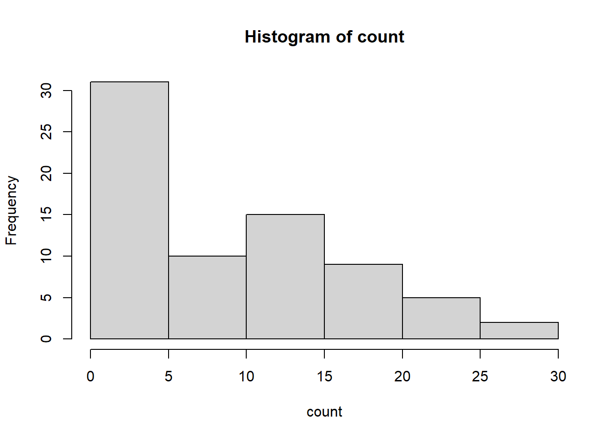
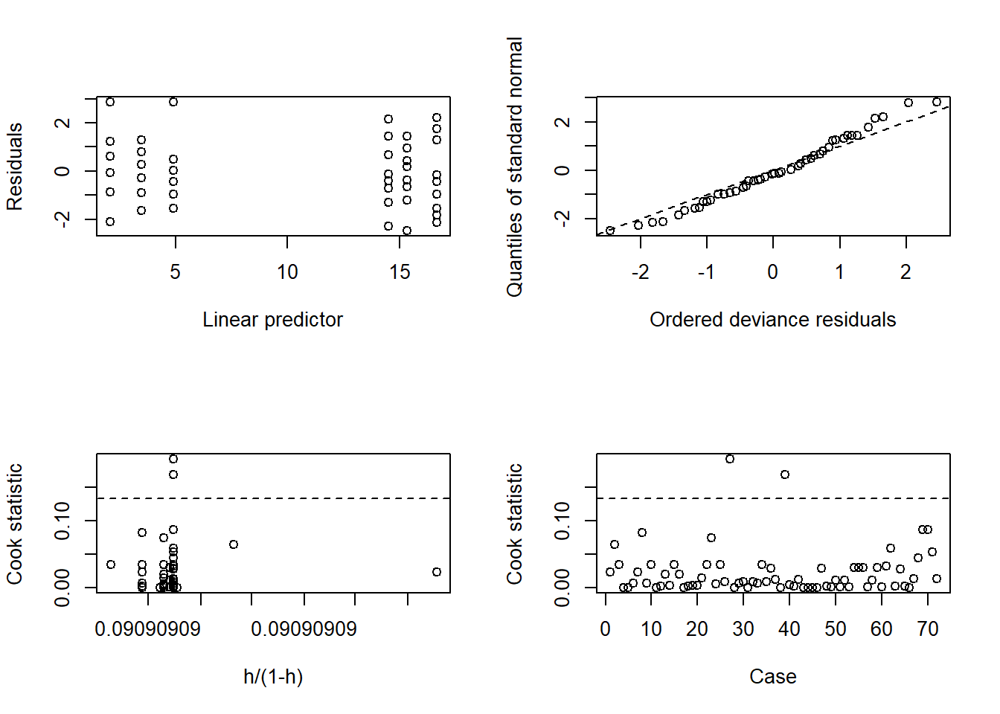
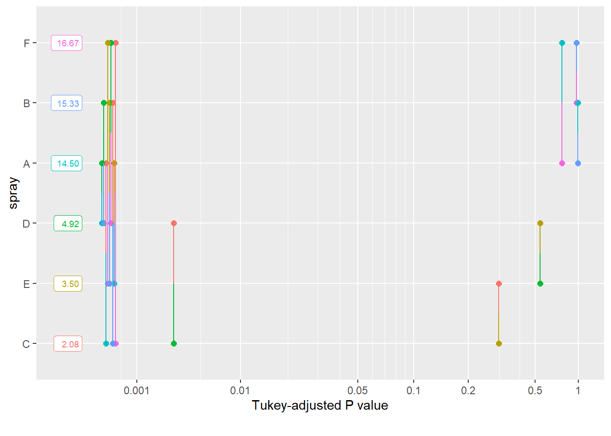

Experimento com um fator e em delineamento inteiramente casualizado para comparar o crescimento micelial de diferentes espécies de um fungo fitopatogênico. A resposta a ser estudada é a TCM = taxa de crescimento micelial.
Preparo
library(readxl)library(tidyverse)
Warning: package 'ggplot2' was built under R version 4.2.3
Warning: package 'tibble' was built under R version 4.2.3
Warning: package 'dplyr' was built under R version 4.2.3
── Attaching core tidyverse packages ──────────────────────── tidyverse 2.0.0 ──
✔ dplyr 1.1.2 ✔ readr 2.1.4
✔ forcats 1.0.0 ✔ stringr 1.5.0
✔ ggplot2 3.4.2 ✔ tibble 3.2.1
✔ lubridate 1.9.2 ✔ tidyr 1.3.0
✔ purrr 1.0.1
── Conflicts ────────────────────────────────────────── tidyverse_conflicts() ──
✖ dplyr::filter() masks stats::filter()
✖ dplyr::lag() masks stats::lag()
ℹ Use the conflicted package (<http://conflicted.r-lib.org/>) to force all conflicts to become errors
aov1 <-aov(tcm ~ especie, data = micelial)summary(aov1)
Df Sum Sq Mean Sq F value Pr(>F)
especie 4 0.4692 0.11729 1.983 0.117
Residuals 37 2.1885 0.05915
library(performance)
Warning: package 'performance' was built under R version 4.2.3
check_heteroscedasticity(aov1)
OK: Error variance appears to be homoscedastic (p = 0.175).
check_normality(aov1)
OK: residuals appear as normally distributed (p = 0.074).
library(DHARMa)
This is DHARMa 0.4.6. For overview type '?DHARMa'. For recent changes, type news(package = 'DHARMa')
plot(simulateResiduals(aov1))
Warning in checkModel(fittedModel): DHARMa: fittedModel not in class of
supported models. Absolutely no guarantee that this will work!

# teste de normalidadehist(aov1$residuals)
qqnorm(aov1$residuals)qqline(aov1$residuals)
shapiro.test(aov1$residuals)
Shapiro-Wilk normality test
data: aov1$residuals
W = 0.95101, p-value = 0.07022
Interpretação
Premissas da anova atendidas. Efeito não significativo de espécies.
E quanto não atende às premissas?
Efeito de inseticida na mortalidade de insetos (Beall, 1942). The Transformation of data from entomological field experiments, Biometrika, 29, 243–262. Dados no pacote “datasets” do R. data(InsectSprays)
spray emmean SE df lower.CL upper.CL
A 14.50 1.13 66 12.240 16.76
B 15.33 1.13 66 13.073 17.59
C 2.08 1.13 66 -0.177 4.34
D 4.92 1.13 66 2.656 7.18
E 3.50 1.13 66 1.240 5.76
F 16.67 1.13 66 14.406 18.93
Confidence level used: 0.95
pwpm(aov2_means)
A B C D E F
A [14.50] 0.9952 <.0001 <.0001 <.0001 0.7542
B -0.833 [15.33] <.0001 <.0001 <.0001 0.9603
C 12.417 13.250 [ 2.08] 0.4921 0.9489 <.0001
D 9.583 10.417 -2.833 [ 4.92] 0.9489 <.0001
E 11.000 11.833 -1.417 1.417 [ 3.50] <.0001
F -2.167 -1.333 -14.583 -11.750 -13.167 [16.67]
Row and column labels: spray
Upper triangle: P values adjust = "tukey"
Diagonal: [Estimates] (emmean) type = "response"
Lower triangle: Comparisons (estimate) earlier vs. later
library(multcomp)
Carregando pacotes exigidos: mvtnorm
Carregando pacotes exigidos: survival
Warning: package 'survival' was built under R version 4.2.3
Carregando pacotes exigidos: TH.data
Warning: package 'TH.data' was built under R version 4.2.3
Carregando pacotes exigidos: MASS
Warning: package 'MASS' was built under R version 4.2.3
Attaching package: 'MASS'
The following object is masked from 'package:dplyr':
select
Attaching package: 'TH.data'
The following object is masked from 'package:MASS':
geyser
library(multcompView)
Warning: package 'multcompView' was built under R version 4.2.3
cld(aov2_means)
spray emmean SE df lower.CL upper.CL .group
C 2.08 1.13 66 -0.177 4.34 1
E 3.50 1.13 66 1.240 5.76 1
D 4.92 1.13 66 2.656 7.18 1
A 14.50 1.13 66 12.240 16.76 2
B 15.33 1.13 66 13.073 17.59 2
F 16.67 1.13 66 14.406 18.93 2
Confidence level used: 0.95
P value adjustment: tukey method for comparing a family of 6 estimates
significance level used: alpha = 0.05
NOTE: If two or more means share the same grouping symbol,
then we cannot show them to be different.
But we also did not show them to be the same.
Qualidade ajuste do modelo
# não paramétricokruskal.test(count ~ spray, data = insects)
Kruskal-Wallis rank sum test
data: count by spray
Kruskal-Wallis chi-squared = 54.691, df = 5, p-value = 1.511e-10
Study: insects$count ~ insects$spray
Kruskal-Wallis test's
Ties or no Ties
Critical Value: 54.69134
Degrees of freedom: 5
Pvalue Chisq : 1.510845e-10
insects$spray, means of the ranks
insects.count r
A 52.16667 12
B 54.83333 12
C 11.45833 12
D 25.58333 12
E 19.33333 12
F 55.62500 12
Post Hoc Analysis
t-Student: 1.996564
Alpha : 0.05
Minimum Significant Difference: 8.462804
Treatments with the same letter are not significantly different.
insects$count groups
F 55.62500 a
B 54.83333 a
A 52.16667 a
D 25.58333 b
E 19.33333 bc
C 11.45833 c
spray emmean SE df asymp.LCL asymp.UCL .group
C 2.08 0.417 Inf 1.27 2.90 1
E 3.50 0.540 Inf 2.44 4.56 12
D 4.92 0.640 Inf 3.66 6.17 2
A 14.50 1.099 Inf 12.35 16.65 3
B 15.33 1.130 Inf 13.12 17.55 3
F 16.67 1.179 Inf 14.36 18.98 3
Confidence level used: 0.95
P value adjustment: tukey method for comparing a family of 6 estimates
significance level used: alpha = 0.05
NOTE: If two or more means share the same grouping symbol,
then we cannot show them to be different.
But we also did not show them to be the same.
Anova não paramétrica
insects
# A tibble: 72 × 2
spray count
<fct> <dbl>
1 A 10
2 A 7
3 A 20
4 A 14
5 A 14
6 A 12
7 A 10
8 A 23
9 A 17
10 A 20
# ℹ 62 more rows
kruskal.test(count ~ spray, data = insects)
Kruskal-Wallis rank sum test
data: count by spray
Kruskal-Wallis chi-squared = 54.691, df = 5, p-value = 1.511e-10
Study: insects$count ~ insects$spray
Kruskal-Wallis test's
Ties or no Ties
Critical Value: 54.69134
Degrees of freedom: 5
Pvalue Chisq : 1.510845e-10
insects$spray, means of the ranks
insects.count r
A 52.16667 12
B 54.83333 12
C 11.45833 12
D 25.58333 12
E 19.33333 12
F 55.62500 12
Post Hoc Analysis
t-Student: 1.996564
Alpha : 0.05
Minimum Significant Difference: 8.462804
Treatments with the same letter are not significantly different.
insects$count groups
F 55.62500 a
B 54.83333 a
A 52.16667 a
D 25.58333 b
E 19.33333 bc
C 11.45833 c
GLM família poisson
# distribuição da respostaattach(insects)
The following objects are masked from insects (pos = 3):
count, spray
insects
# A tibble: 72 × 2
spray count
<fct> <dbl>
1 A 10
2 A 7
3 A 20
4 A 14
5 A 14
6 A 12
7 A 10
8 A 23
9 A 17
10 A 20
# ℹ 62 more rows
hist(count)

# modelo linear generalizadom2 <-lm(count ~ spray, data = insects)summary(m2)
Call:
lm(formula = count ~ spray, data = insects)
Residuals:
Min 1Q Median 3Q Max
-8.333 -1.958 -0.500 1.667 9.333
Coefficients:
Estimate Std. Error t value Pr(>|t|)
(Intercept) 14.5000 1.1322 12.807 < 2e-16 ***
sprayB 0.8333 1.6011 0.520 0.604
sprayC -12.4167 1.6011 -7.755 7.27e-11 ***
sprayD -9.5833 1.6011 -5.985 9.82e-08 ***
sprayE -11.0000 1.6011 -6.870 2.75e-09 ***
sprayF 2.1667 1.6011 1.353 0.181
---
Signif. codes: 0 '***' 0.001 '**' 0.01 '*' 0.05 '.' 0.1 ' ' 1
Residual standard error: 3.922 on 66 degrees of freedom
Multiple R-squared: 0.7244, Adjusted R-squared: 0.7036
F-statistic: 34.7 on 5 and 66 DF, p-value: < 2.2e-16
anova(m2)
Analysis of Variance Table
Response: count
Df Sum Sq Mean Sq F value Pr(>F)
spray 5 2668.8 533.77 34.702 < 2.2e-16 ***
Residuals 66 1015.2 15.38
---
Signif. codes: 0 '***' 0.001 '**' 0.01 '*' 0.05 '.' 0.1 ' ' 1
# ajuste do modelolibrary(boot)m4.diag <-glm.diag(m4)glm.diag.plots(m4, glm.diag(m4))

Comparação de médias
library(emmeans)em <-emmeans(m4, ~spray)pwpp(em)

multcomp::cld(em)
spray emmean SE df asymp.LCL asymp.UCL .group
C 2.08 0.417 Inf 1.27 2.90 1
E 3.50 0.540 Inf 2.44 4.56 12
D 4.92 0.640 Inf 3.66 6.17 2
A 14.50 1.099 Inf 12.35 16.65 3
B 15.33 1.130 Inf 13.12 17.55 3
F 16.67 1.179 Inf 14.36 18.98 3
Confidence level used: 0.95
P value adjustment: tukey method for comparing a family of 6 estimates
significance level used: alpha = 0.05
NOTE: If two or more means share the same grouping symbol,
then we cannot show them to be different.
But we also did not show them to be the same.
library(lsmeans)
Warning: package 'lsmeans' was built under R version 4.2.3
The 'lsmeans' package is now basically a front end for 'emmeans'.
Users are encouraged to switch the rest of the way.
See help('transition') for more information, including how to
convert old 'lsmeans' objects and scripts to work with 'emmeans'.
spray lsmean SE df asymp.LCL asymp.UCL .group
C 2.08 0.417 Inf 1.27 2.90 A
E 3.50 0.540 Inf 2.44 4.56 AB
D 4.92 0.640 Inf 3.66 6.17 B
A 14.50 1.099 Inf 12.35 16.65 C
B 15.33 1.130 Inf 13.12 17.55 C
F 16.67 1.179 Inf 14.36 18.98 C
Confidence level used: 0.95
P value adjustment: tukey method for comparing a family of 6 estimates
significance level used: alpha = 0.05
NOTE: If two or more means share the same grouping symbol,
then we cannot show them to be different.
But we also did not show them to be the same.
plot(cld(medias2, by =NULL, Letters = LETTERS, alpha = .05))